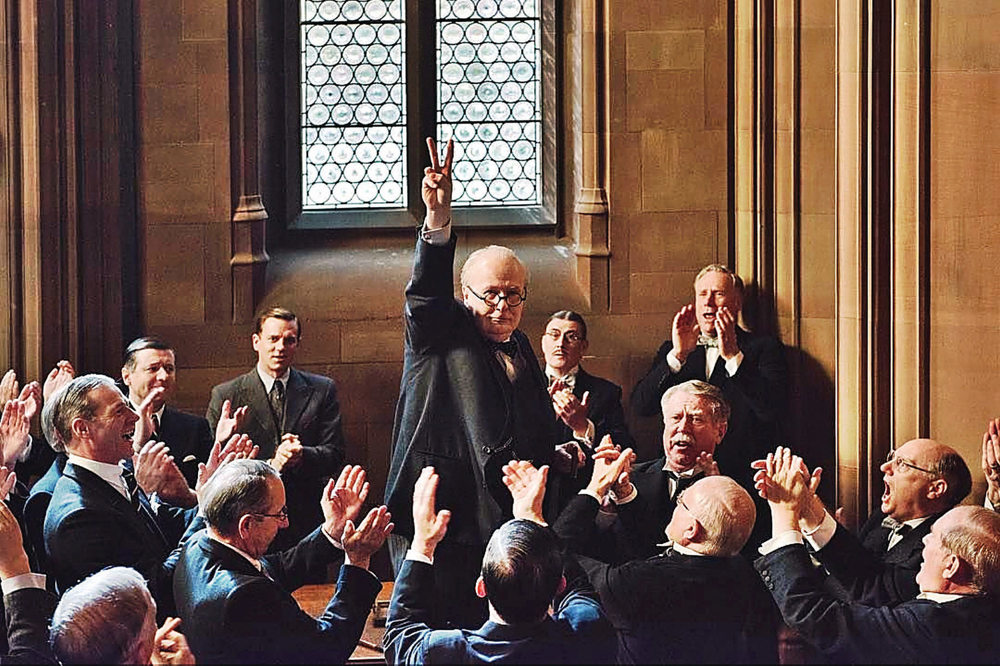

Featuring Gary Oldman in the performance of his career as British Prime Minister Winston Churchill, Darkest Hour takes place in may 1940 during World War II. It follows Churchill as he is forced to deal with the Battle of Dunkirk as well as rallying Parilament and the British people to fight against the Nazis. The film was also nominated for Best Actor, Best Production Design, Best Cinematography, Best Makeup and Hairstyling, and Best Costume Design. 
Back